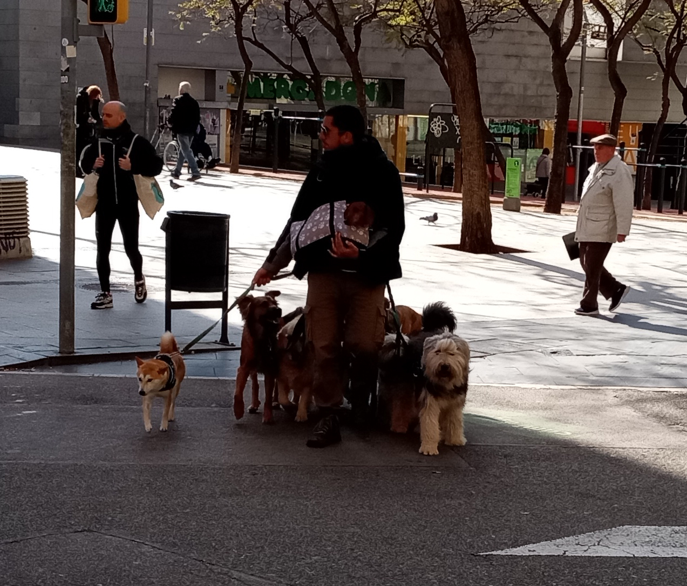
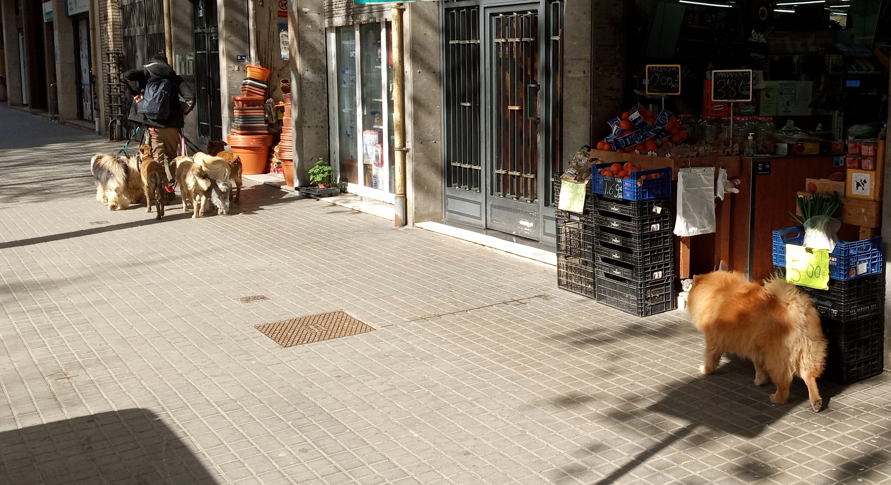

Week 3: 4/4/2022 - 11/4/2022¶
This week we are going to Zaragoza at the end of the week. From a teaching perspective I want to try and prep the students for discussions about the solar panels and wind farms we hope to see and possibly the moon if the weather cooperates. I’m still sorting out my approach to the MUS 101 class but some thoughts from the Museo de la Musica last week are helping it come into focus.
4/4/2022 Monday¶
Finally the weather has cleared although the high today is below 15 C which the Barcelonians clearly see as pretty cold. Everybody is very bundled up with scarves and hats and hoods.
Physics today we prepped ideas about electricity production from the sun and how payback times work. We also discussed the basics of wind turbines and introduced the concept of NIMBY. Good discussion.
Went out and had some sandwiches to eat with Elizabeth and the boys before walking over to Expanish for class. Apparently last week we had short classes (2 hrs) due to a scheduling conflict and going forward we’ll be having 2.5 hrs of class. It’s a lot and everyone’s brains felt pretty fried by the end. 10 folks in a small room with limited ventilation probably reduces the availability of oxygen as well. Tired folks but everyone is learning.
On the way home we hopped off the metro at Sagrada Familia so Dawn to walk around the building. She was impressed but did not find it attractive. We walked home watching for a panaderia for bread since we were running low. Got a loaf of raisin bread (turned out to be very yummy) and some beer bread. Then we passed a household supply store where Dawn hoped to find tape and glue sticks. One thing led to another and we got the tape and glue stick but also a tape measure for physics class, clothespins for laundry, a smaller notebook for spanish that will fit in my man purse, and containers for leftovers. Loaded with bags we wandered home. Bruce stayed up a little late trying to figure out how he understood the 7 elements (or 8 or 4 or 13 depending on who you look at) of music and how to clarify them for the students. No point in getting to far ahead eh?
5/4/2022 Tuesday¶
I feel good about how the students responded to my version of the 7 elements of music. We had a good discussion with lots of questions which meant we only made it through the element of timbre. We’ll pick up the thread in Zaragoza and in the weeks afterwards.
After music class Dawn had kettlebell so I went for a little walkabout as I am begining to do, First thing I saw was a dog walker with a raft of dogs, the most I’ve seen yet. Most amusingly one of the dogs appears to be a Eurasier which is the same breed as one of my daughter’s dogs. As the dog walker wrangled the mob of dogs down the sidewalk the Eurasier deigned to follow along at a leisurely pace. He seemed only just barely willing to lollygag along behind the other dogs. This is sort how Kody is so maybe its a breed thing.
Well organized dog walker…a little underexposed due to bright background, sorry. 
Maybe Eurasiers are always trailing behind…. 
After class Dawn had a good chat with Leo who owns the kettlebell gym about how he got into being a kettlebell gym and all. Lovely story of gently managed growth to provide an opportunity that no one else in Barcelona seemed to want to pick up. While he was talking to Dawn he quickly introduced us to Daniel - friendly American from Phoenix who has been living and working in Spain for 18 years. Mostly in Madrid and recently in Barcelona. We talked a little bit about how to get out of the city and see a little more of the countryside and how folks live outside of Barcelona. He said that he sometimes takes a train as far out as possible and then gets off at one small town and walks 10-20 km to the next train stop. This way he always has a way to get back but gets to see a very different slice of life. Seems like a great idea.
I did some looking at some the FGC lines that go out towards the Mont Senny Natural Park area and the idea seemed plausible. It’s also apparent that from most of the small towns around any of the natural areas there are trails that go off into the parks. These trails are accessible from the train station and run between 10 km and 40 km long. This might be a really interesting way to explore outside of Barcelona. Could be day trips or overnight trips. More on this later…this week is the Zaragoza trip so we’re already busy.
Walked home to take a short siesta. Around 5:30 we headed out to the Museo del Desseny down at Plaça Glories. Modest entrance fee and we started with the design history of the last 60 years or so of consumer goods. Some very intriguing stuff that got you thinking. Very enjoyable. That collection is on the ground floor. There are 3 other collections on the upper floors that we went to visit. The is a interesting overview of graphic design in Barcelona since the 70’s. The basic thesis is that after the Franco years there was an enormous desire to rejoin the rest of the world that led to an explosion of interest in design and design culture. This rapid and passionate growth and engagement with design has become a characteristic of the Catalan culture and it’s view of itself. Some really fascinating examples of poster, brand, book, and event design across the 50 years including a wonderful set of materials from the 1992 Olympics. Cool display. The upper two floors are a collection of Catalan household objects across 6 centuries which is historically interesting but hard to stick with all the pots and fabrics and wooden boxes. The last couple of rooms about the 20th century were easier to engage with for me partly due to the fascination with Gaudi. The last collection on the top floor is dedicated to the form and design of fashion across roughly the last 200 years. It is presented in a intriguing way but using mannequins that have been distorted to illustrate what aspects of the silhouette were being enhanced or minimized. Interesting way to organize the history. Given our relative lack of interest in fashion it was a quick walk through but nonetheless well done.
Home to eat and try to get HW done for spanish class.
6/4/2022 Wednesday¶
Expanish HW …..